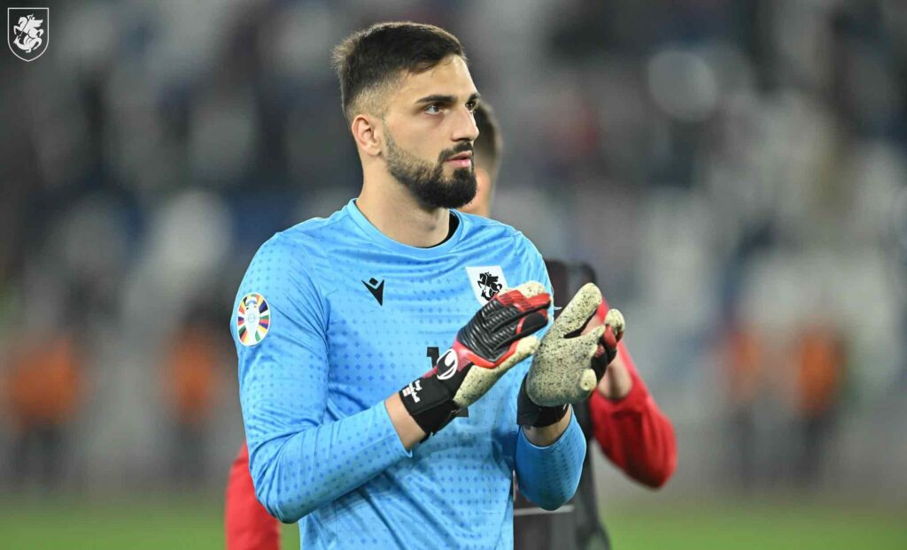

ადრეული კარიერა
საფეხბურთო კარიერა დაიწყო საფეხბურთო კლუბ „გაგრას“ მოზარდთა გუნდში.[2] 2012 წელს გადავიდა თბილისის „დინამოში“, სადაც სხვადასხვა ასაკის ახალგაზრდულ გუნდებში თამაშობდა. 2018 წლის სეზონში მთავარი გუნდის განაცხადშიც მოხვდა, თუმცა ქვეყნის პირველობის ფარგლებში გამართულ შეხვედრებში გუნდის ძირითად შემადგენლობაში არ უთამაშია.
„რუსთავი“
2019 წელს „რუსთავში“ იჯარით გადავიდა. მისი დებიუტი კლუბში 2019 წლის 2 მარტს თბილისის „ლოკომოტივთან“ მატჩში შედგა. შეხვედრა თბილისელთა გამარჯვებით 4–1 დამთავრდა.[3] მომდევნო მატჩში, 2019 წლის 6 მარტს, რომელშიც „ვიტ ჯორჯიას“ წინააღმდეგ ითამაშა, კარის მშრალად შენახვა შეძლო და შეხვედრაც უგოლო ფრით 0–0 დამთავრდა.[4] სეზონის დასაწყისიდანვე თავი კლუბის ძირითადი მეკარის ამპლუაში დაიმკვიდრა და 30 მატჩიდან 9 შეხვედრაში ბურთი არ გაუშვია. საიჯარო ხელშეკრულების დასრულების შემდეგ კი კლუბი დატოვა.
თბილისის „ლოკომოტივი“
2020 წლის დასაწყისში იჯარით თბილისის „ლოკომოტივში“ განაგრძო თამაში. სეზონი სათადარიგოთა სკამზე დაიწყო. მისი დებიუტი კლუბში 2020 წლის 9 ივლისს ბათუმის „დინამოსთან“ მატჩში შედგა. შეხვედრა ბათუმელთა გამარჯვებით 4–1 დამთავრდა.[5] „ლოკომოტივის“ შემადგენლობაში პირველი „მშრალი“ მატჩი 2020 წლის 18 ივლისს „საბურთალოს“ წინააღმდეგ ითამაშა — შეხვედრა უგოლო ფრით 0–0 დამთავრდა.[6] მალევე კლუბში ძირითადი მეკარის ადგილი დაიმკვიდრა. იმავე წელს კლუბთან ერთად უეფა-ს ევროპა ლიგის მესამე საკვალიფიკაციო რაუნდს მიაღწია, რა დროსაც თბილისელებმა პირველ ორ ტურში რუმინული „უნივერსიტატეა“ და მოსკოვის „დინამო“ დაჯაბნეს, ხოლო მესამე ტურში ესპანურ „გრანადასთან“ დამარცხდნენ. ესპანურ კლუბთან დამარცხების მიუხედავად, ქართველმა მეკარემ ესპანელი სკაუტების ყურადღება თავისი გამორჩეული თამაშით მაინც მიიპყრო.[7] 2020 წლის დეკემბრის ბოლოს მან საქართველოს ფეხბურთის ფედერაციისგან წლის საუკეთესო მეკარის ჯილდო მიიღო.[8] 2021 წლის იანვარში კი უეფამ ფეხბურთელი 50 ყველაზე პერსპექტიული ფეხბურთელის სიაში შეიყვანა.[9] 2021 წლის დასაწყისში მან კვლავ თბილისურ კლუბში გამოსვლა განაგრძო.
„ვალენსია“
2021 წლის 7 ივნისს ერთწლიანი იჯარით და შემდგომი გამოსყიდვის შესაძლებლობით, თავდაპირველად გაგზავნილი იქნა „ვალენსიას“ სარეზერვო გუნდში, რათა იქ ევარჯიშა.[10][11] წინასასეზონო ვარჯიშზე მამარდაშვილმა ესპანური კლუბის მწვრთნელზე, ხოსე ბორდალასზე საუკეთესო შთაბეჭდილება მოახდინა, რის შემდეგაც ქართველი ფეხბურთელი მან მაშინვე მთავარ გუნდში ძირითად მეკარედ გადაიყვანა.[12] მისი ესპანური დებიუტი 2021 წლის 13 აგვისტოს, ლა ლიგის პირველი ტურის შეხვედრაში, „ხეტაფეს“ წინააღმდეგ შედგა. მატჩი „ვალენსიას“ გამარჯვებით, ანგარიშით 1–0 დასრულდა.[13]
2021 წლის ბოლოს „ვალენსიამ“ საბოლოოდ გამოისყიდა მამარდაშვილი და მასთან კონტრაქტი 2024 წლის ზაფხულამდე გააფორმა.[14][15] პირველი მატჩი, როგორც კლუბის სრულფასოვანმა მოთამაშემ, 2022 წლის 6 თებერვალს, „რეალ სოსიედადის“ წინააღმდეგ ჩაატარა.[16] თავის სადებიუტო სეზონში მან ესპანეთის პირველობის 18 შეხვედრაში მიიღო მონაწილეობა, რომლებშიც სულ 20 გოლი გაუშვა, ხოლო 8-ჯერ კარის მშრალად შენახვა შეძლო. ტურის სიმბოლურ ნაკრებშიც რამდენჯერმე მოხვდა და მატჩის საუკეთესო მოთამაშის ჯილდოც მიიღო.[17] 2022 წლის მაისში, Marca-ს ვერსიით, ფეხბურთელი ლა ლიგის სეზონის საუკეთესო მოთამაშეთა სიმბოლურ ნაკრებშიც მოხვდა.
2023 წლის 21 მაისს ლა ლიგის 35-ე ტურში „ვალენსიამ“ მადრიდის „რეალს“ უმასპინძლა. მატჩი „ვალენსიას“ გამარჯვებით, ანგარიშით 1–0 დასრულდა. საყოველთაო შეფასებით გიორგი მამარდაშვილმა „რეალთან“ თავისი კარიერის საუკეთესო მატჩი ჩაატარა, ორივე გუნდში გამორჩეული იყო და აღიარებაც მოიპოვა. ლა ლიგამ მამარდაშვილის მიერ ვალვერდეს ახლო მანძილიდან დარტყმული ბურთის მოგერიება[18] — საუკეთესოდ მიიჩნია და 35-ე ტურის სიმბოლურ ნაკრებში შეიყვანა. ქართველი ფეხბურთელი ზედიზედ მეორედ, იმ სეზონში კი მესამედ დაასახელეს ტურის საუკეთესო მეკარედ.[19][20]
2023–24 წლების სეზონში „ვალენსიას“ მაისურით ლა ლიგაში 38-დან 37 შეხვედრაში მიიღო მონაწილეობა და 1 მატჩი „ბარსელონასთან“ მიღებული წითელი ბარათის გამო გამოტოვა. 37 მატჩში გიორგიმ 13-ჯერ შეძლო კარის მშრალად შენახვა და 41 ბურთი გაუშვა.
სანაკრებო კარიერა
2016 წლის 3 ოქტომბერს ერთი მატჩი ითამაშა საქართველოს 17-წლამდე ფეხბურთელთა ნაკრების რიგებში შვედი თანატოლების წინააღმდეგ.[21]
საქართველოს 21-წლამდე ფეხბურთელთა ნაკრების შემადგენლობაში მონაწილეობდა 2023 წლის 21-წლამდე ფეხბურთელთა ევროპის ჩემპიონატში, რომელსაც საქართველო თანამასპინძლობდა.[22]
რაც შეეხება საქართველოს ეროვნულ ნაკრებს, მისი დებიუტი ეროვნულ გუნდში 2021 წლის 8 სექტემბერს, ბულგარეთის ეროვნული ნაკრების წინააღმდეგ გამართულ ამხანაგურ შეხვედრაში შედგა.
მომდევნო 2022 წელს, ხუთ სანაკრებო შეხვედრაში მიიღო მონაწილეობა. მათგან მხოლოდ ორი იყო ამხანაგური — ალბანეთის და მაროკოს ნაკრებთან, ხოლო დანარჩენ მატჩებში ქვეყნის ნაკრების ღირსების დაცვა მას უეფას ერთა ლიგაზე მოუწია.
2023 წელს რვაჯერ ითამაშა საქართველოს ეროვნულ ნაკრებში და რვავეჯერ ევროპის ჩემპიონატის შესარჩევი ციკლის მატჩებში.
2024 წლის 26 მარტს, ევრო 2024-ის საკვალიფიკაციო ეტაპის პლეი-ოფის ფინალში, საქართველომ საბერძნეთს მოუგო და პირველად ისტორიაში ევროპის ჩემპიონატის ფინალურ ეტაპზე გამოსვლის უფლება მოიპოვა. მატჩის ძირითადი და დამატებითი დრო უგოლოდ, 0–0 დასრულდა. მატჩისშემდგომი პენალტების სერიაში საქართველოს ნაკრებმა მეტოქე 4–2 დაამარცხა. გიორგი მამარდაშვილმა ბერძენთა გუნდის კაპიტნის ანასტასიოს ბაკასეტასის მიერ დარტყმული პირველივე პენალტი მოიგერია, რამაც უმნიშვნელოვანესი როლი ითამაშა ქართველი ფეხბურთელების საბოლოო წარმატებაში.[23][24][კომ. 1]

გიორგი მიქაუტაძე
მეცი
მიქაუტაძის დებიუტი „მეცში“ შედგა 2019 წლის 7 დეკემბერს ლიგა 1-ის მატჩში, „ნიცას“ წინააღმდეგ. „მეცმა“ შეხვედრა ანგარიშით 1-4 წააგო.[1] 2019 წლის 10 დეკემბერს „მეცმა“ მას ოთხწლიანი კონტრაქტი გაუფორმა. მიქაუტაძისთვის ეს პირველი პროფესიონალური კონტრაქტი იყო.[2]
სერენი
2020 წელს იჯარით ის ბელგიის პირველი B ლიგის (მეორე ლიგა) გუნდ „სერენში“ გადავიდა, სადაც 8 მატჩში 14 გოლი გაიტანა და მალევე გუნდის ლიდერად იქცა. ჩატარებული რვა შეხვედრიდან მიქაუტაძემ 6 მატჩში მოახერხა გატანა. მიქაუტაძემ „ლომელს“ 4 გოლი გაუტანა, 3-3 გაუტანა „ლიერსსა“ და „ბრიუგე II-ს“, 2 გაუტანა „მოლენბეკს“, ხოლო თითო გოლი „დეინცესა“ და „უნიონს“. მან გოლის გატანა ვერ მოახერხა „ვესტერლოსთან“ და „ლომელთან“ მატჩებში.[3]
საერთაშორისო კარიერა
საფრანგეთში დაბადებული მიქაუტაძე ქართული წარმოშობისაა.[4] 2021 წლის 25 მარტს შედგა მისი დებიუტი საქართველოს ეროვნულ საფეხბურთო ნაკრებში, 2022 წლის მსოფლიო ჩემპიონატის შესარჩევი ეტაპის შეხვედრაში, შვედეთის ეროვნული საფეხბურთო ნაკრების წინააღმდეგ. მიქაუტაძე თამაშში შეცვლაზე შემოვიდა. საქართველოს ნაკრები ანგარიშით 0–1 დამარცხდა.[5] პირველი გოლი ნაკრების მაისურით გაიტანა 2021 წლის 2 ივნისს, რუმინეთთან ანგარიშით 2–1 მოგებულ შეხვედრაში.